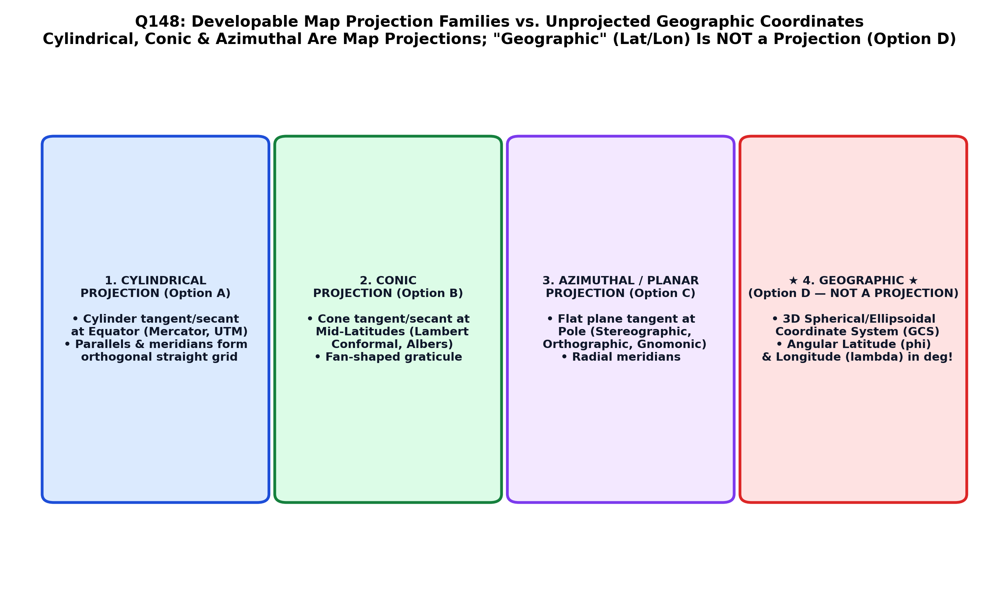

Because the Earth is a three-dimensional oblate ellipsoid (or geoid), it cannot be flattened onto a two-dimensional planar sheet without introducing geometric distortion in at least one of four fundamental spatial properties: Shape (Conformality), Area (Equivalence), Distance (Equidistance), or Direction (Azimuthality) (Carl Friedrich Gauss's Theorema Egregium).
A Map Projection is a systematic mathematical transformation that maps angular coordinates on the curved ellipsoid $(\phi, \lambda)$ onto planar Cartesian coordinates $(x, y)$ on a flat map sheet. In classical cartography, projections are constructed by projecting the Earth's graticule onto a developable surface—a 3D geometric surface that can be cut and unrolled into a flat 2D plane without stretching or tearing (Snyder 1987; Chang; Bangar):
| Developable Surface Projection Family | Geometric Surface Geometry | Standard Line / Contact | Optimal Global Application |
|---|---|---|---|
| 1. CYLINDRICAL PROJECTION (Option A) | A cylinder wrapped around the globe (tangent at Equator or secant at standard parallels). | Straight horizontal parallels and straight vertical meridians intersecting at $90^\circ$. | Equatorial and tropical regions, global maritime navigation (Mercator, Transverse Mercator / UTM). |
| 2. CONIC PROJECTION (Option B) | A cone placed apex-up over the pole, resting tangent or secant along standard parallels. | Concentric circular arcs for parallels, radiating straight lines for meridians. | Mid-latitude east-west continental belts (Lambert Conformal Conic - LCC, Albers Equal Area). |
| 3. AZIMUTHAL (PLANAR) PROJECTION (Option C) | A flat tangent or secant plane touching the globe at a single contact point. | True directions preserved from the center point; concentric circles for parallels. | Polar regions, global hemispherical views, seismic epicenter mapping (Stereographic, Gnomonic, Orthographic). |
| GEOGRAPHIC (GCS) (Option D • NOT A PROJECTION) | Unprojected spherical/ellipsoidal 3D datum framework. Coordinates expressed in angular degrees ($\text{Latitude } \phi, \text{Longitude } \lambda$). | No developable surface; does not project onto a flat Cartesian plane. | Global reference framework (WGS 84, Indian Everest 1956). NOT a map projection! |

Therefore, while Cylindrical, Conic, and Azimuthal constitute the three classic, universal geometric families of map projections, Geographic refers to an unprojected spherical coordinate system, and is NOT a type of map projection (Option D).
A Geographic Coordinate System (GCS) (e.g. WGS 84, NAD 83, Everest 1956) is a 3D reference framework that defines locations on the curved Earth ellipsoid using angular units of degrees, minutes, and seconds ($\text{Latitude } \phi, \text{Longitude } \lambda$). It does not use a developable surface and is not a map projection. Flat paper maps require projected coordinate systems (PCS).
Cylindrical is one of the three primary developable surface projection families (e.g. Mercator, Transverse Mercator, Plate Carrée). It projects the sphere onto an enveloping cylinder.
Conic is one of the three classic projection families (e.g. Lambert Conformal Conic, Albers Equal Area, Polyconic). It projects the sphere onto a tangent or secant cone.
Azimuthal (also called Planar) is the third primary projection family (e.g. Orthographic, Stereographic, Lambert Azimuthal Equal Area). It projects the sphere onto a flat tangent plane.
| Projection Family | Preserved Metric Property | Prominent Mathematical Projections | Primary Practical Use |
|---|---|---|---|
| Cylindrical Conformal | True local angles and shapes (Conformal) | Mercator ($\tan\theta$ expansion), Universal Transverse Mercator (UTM) | Marine navigation (Rhumb lines are straight lines); global topographic grid (UTM 6° zones) |
| Cylindrical Equal-Area | True surface areas (Equivalent) | Gall-Peters, Lambert Cylindrical Equal-Area | Thematic global population distribution maps |
| Conic Conformal | True local shapes across mid-latitudes | Lambert Conformal Conic (LCC) | Survey of India topographic base sheets; aeronautical flight navigation charts |
| Conic Equal-Area | True surface areas across east-west zones | Albers Equal Area Conic | National census mapping, agricultural resource distribution |
| Azimuthal (Planar) | True great circle directions from center; Stereographic preserves shape | Polar Stereographic, Gnomonic (all great circles are straight lines) | Polar navigation, seismic wave propagation rays |
| Geographic (GCS) | None (distorts shape, area, and distance on flat screen) | Unprojected Latitude/Longitude (Plate Carrée display) | Global GPS data collection and storage (WGS 84: EPSG 4326) |